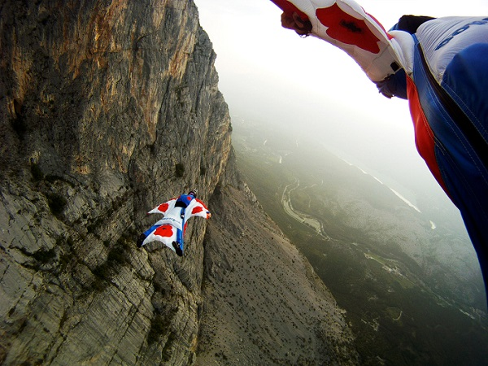

Эта страница на русском языке

AFF-курс
– это программа ускоренного обучения прыжкам с парашютом. В настоящий момент она является самым быстрым и в
то же время безопасным способом научиться прыгать самостоятельно. Это своего рода «золотой стандарт», принятый
во всем мире. Благодаря ей абсолютно любой человек всего за несколько дней может освоить технику свободного
падения и управления куполом типа «крыло».
Уникальность программы АФФ в том, что с самого первого прыжка начинающий парашютист попадает в реальные условия.
Для этого используется особая студенческая система, единственным отличием которой от спортивного крыла является
продублированная система автоматического раскрытия парашюта.
В любой момент времени, в воздухе и на земле, рядом со студентом находятся два индивидуальных инструктора.
Это означает, что все возможные ошибки исправляются на месте и прогресс идет намного быстрее, нежели в устаревшей
классической системе обучения, где инструктор наблюдет из самолета, а ученик остается с чуждой человеку средой один
на один.
Высота каждого прыжка – 4000 метров.
При этом чистое время свободного падения составляет 60 секунд.
Иначе говоря, целая минута на то, чтобы отработать все тренировочные элементы. Это позволяет существенно сэкономить
время, а значит и деньги, на обучение.
Все учебные прыжки фиксируются на видеокамеру и тщательно анализируются на замедленном повторе.
Такая «работа над ошибками» помогает лучше подготовиться к следующему прыжку, полностью исключив закрепление
неправильных навыков.